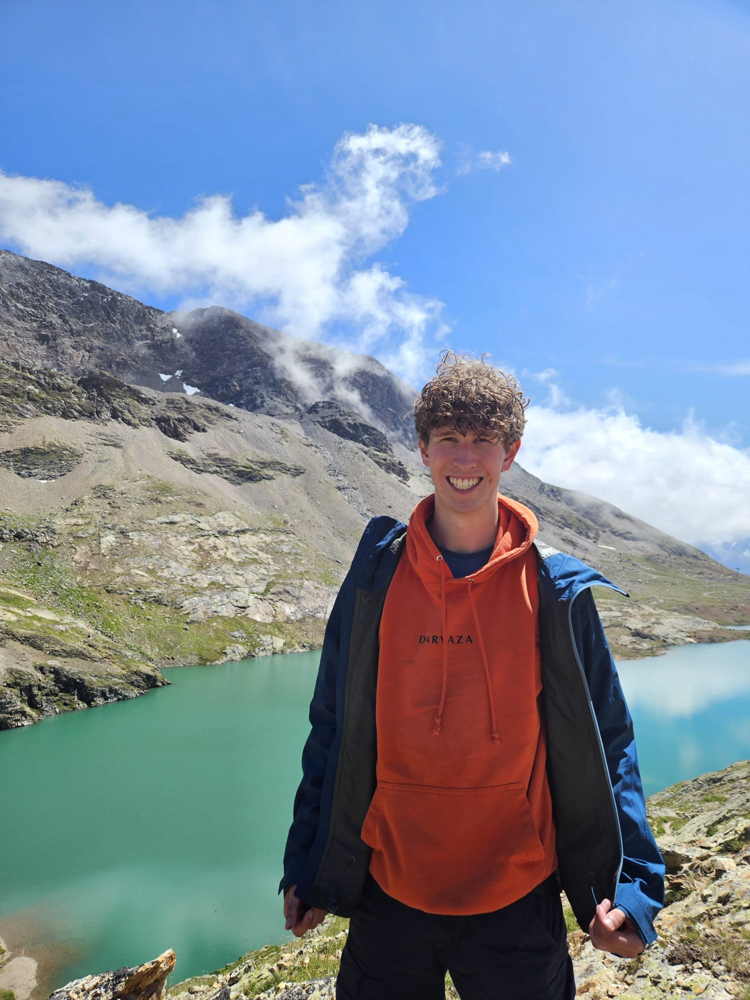

BSc Mechanical Engineering · TU Delft
Mechanical design, simulation, energy systems and multidisciplinary engineering projects.
Mechanical Engineering · TU Delft · High Tech Engineering
I am Tim Pennings, a Mechanical Engineering student at TU Delft. I am curious about how technical systems work, from mechanical prototypes to advanced high-tech systems. In my upcoming master in High Tech Engineering, I want to build a deeper understanding of precision systems, simulation and chip-related technology.

Main project
My Bachelor End Project: a compact dryer for wet polystyrene beads used in flow experiments. The project combines mechanical design, airflow, heating, sensing and energy measurement.
Mechanical design · Prototype · Energy measurement
The goal is to dry wet particles in a controlled and energy-efficient way. The design uses a rotating drum, heated airflow, humidity and temperature sensors, and a measurement strategy to compare drying performance.

Other projects
A few projects that show different sides of my engineering background: simulation, energy systems and production planning.
ANSYS Fluent · Aerodynamics
Simulation of a NACA 4415 airfoil close to the ground, comparing lift, drag and aerodynamic efficiency.
Energy systems · Heat pumps
Energy-system modelling with heat demand, heat recovery scenarios and heat-pump integration.
Forecasting · Production planning
Demand forecasting and supply planning using production schedules, inventory models and MRP.
Profile
I enjoy understanding how systems work and improving them step by step. I am interested in design, simulation, energy systems and high-tech engineering, especially where theory connects to real hardware.
Mechanical design, simulation, energy systems and multidisciplinary engineering projects.
Courses in energy, numerical flow simulation, micro/nano topics, AI applications and management.
Building knowledge in advanced engineering systems, precision technology and chip-related systems.
Developing leadership, organization, communication and external relations experience.
Skills
Tools and topics I have used in coursework, projects and prototype development.
SolidWorks, prototyping, component selection and design requirements.
ANSYS Fluent, COMSOL and numerical analysis for engineering decisions.
Python, MATLAB, Excel, data processing and technical visualization.
Aspen Plus, heat pumps, mass balances, energy balances and optimization thinking.
Contact
I am interested in internships, engineering projects and opportunities related to mechanical design, simulation, energy systems and high-tech engineering.